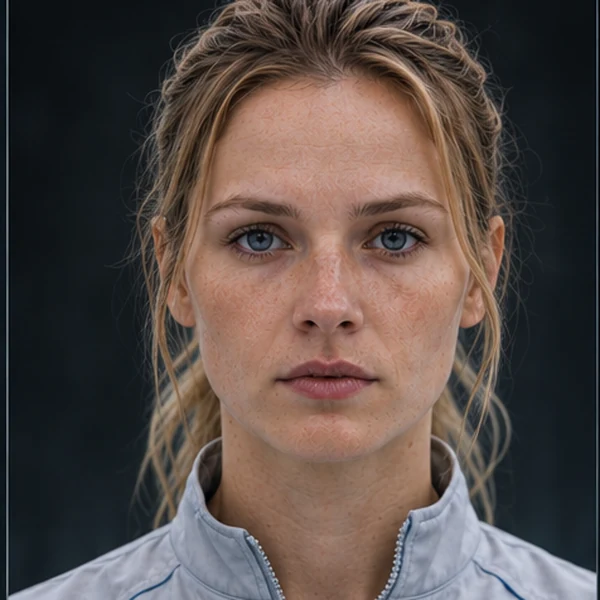
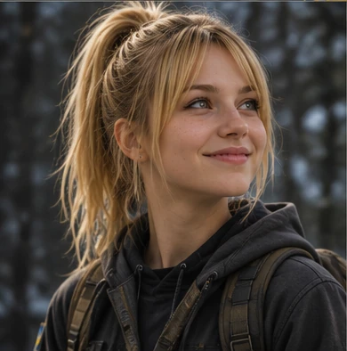
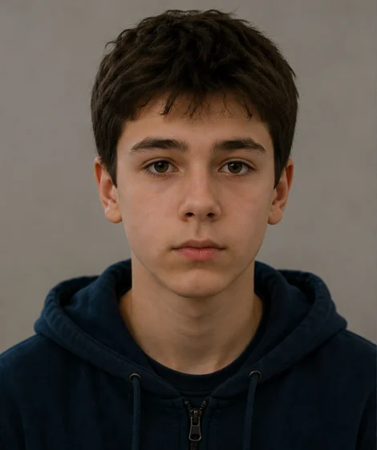
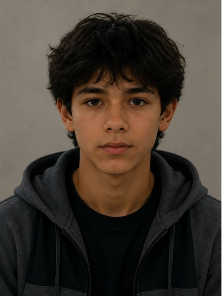
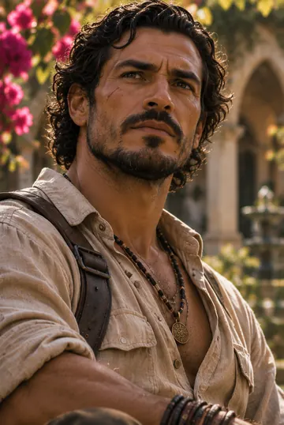

ZERO PLAN · MEDICINE
Leila
A physician coordinating inter-Plan medical programmes, capsule supplies and medical training. She accepts Marat's proposal of marriage.
Read more →PEOPLE FROM DIFFERENT WORLDS AND ERAS
Their stories begin in different worlds and different eras, but gradually become part of one larger story.

ZERO PLAN · MEDICINE
A physician coordinating inter-Plan medical programmes, capsule supplies and medical training. She accepts Marat's proposal of marriage.
Read more →
TECHNOLOGY DEVELOPMENT · ROBOTICS · PROTECTION
Engineer and development lead for the R-10 and R-17 autonomous platforms, networked robot control and mobile defensive systems.
Read more →ZERO PLAN · SCIENCE AND ENGINEERING
Senior research associate and engineering coordinator. Organises research centres, underground cities and evaluates new robotic systems.
Read more →FIRST PLAN
A general involved in coordinating military and state-level matters.

KHARAKTERNYKY · INITIATION · PORTALS
A young Ukrainian kharakternyk. She learns to open portals, trains with the Molfar, survives a severe injury and later helps train new kharakternyky.
Read more →
UNDERGROUND CITIES · MEDICINE
A student who discovers an aptitude for medicine. He intuitively identifies patient problems and learns to operate medical recovery capsules.
Read more →
UNDERGROUND CITIES · MENTAL ABILITIES
Artem and Vlad's friend. Curious and sociable; after being rescued from a laboratory, he gradually discovers a new life and learns to decide for himself how to use his exceptional mental abilities.
Read more →
CHARACTERS · FINLAND
A Finnish student of Molfar. Quiet and reserved, he develops his thought-link ability and learns to open portals independently.
Read more →CHARACTERS · KENYA
A Kenyan student of Molfar. Confident, decisive and passionate, she develops her thought-link ability and learns to open portals.
Read more →RECONNAISSANCE
A kharakternyk and leader of a reconnaissance team, working with ships, Plan exploration and dangerous investigations.
RECONNAISSANCE
A technical specialist on Evihid's team who works with scanning data and ship systems.
RECONNAISSANCE
A pilot on Evihid's reconnaissance team, involved in flights and operations on other Plans.
MILITARY OPERATIONS
A Turkish general and Oleksii's partner in military coordination and information exchange.

ZERO PLAN · INDUSTRY
Coordinates the Zero Plan's industrial capacity, medical capsule production and the transfer of manufacturing cycles to other Plans.
Read more →
FIRST PLAN · PROPHECY
Grandpa Mykola's wife, a woman with the gift of prophecy. Her visions change as events unfold, and her warning of humanity's destruction helps set the main story in motion.
Read more →
SECOND PLAN · COORDINATION
Chief coordinator of the Second Plan. Leads inter-Plan negotiations, aligns political and defence decisions, and coordinates his world's role in the shared war effort.
Read more →MILITARY OPERATIONS
A company commander on the First Plan who observes troop preparations and movements before an offensive.
DISTANT PLAN
An inhabitant of a distant planet who has lived there for nearly two centuries. His story shows how the Three-Day Law restricted resettlement.

ZERO PLAN · MEDICAL TRAINING
A young inhabitant of the Zero Plan underground city. Observant and practical, he quickly befriends Artem, Denys and Vlad; he and Artem show an intuitive aptitude for working with medical capsules.
Read more →THE ORDER
A former Corporation member whose knowledge of internal codes, routes and hidden projects helps the investigation.
UNKNOWN STORYLINE
A mysterious character connected with the final part of the book and a separate line of investigation.
RESCUE SERVICE
Foreman of the United Humanity rescue team. Leads a rescue unit and takes part in complex evacuation operations.
INFRASTRUCTURE
An electrician working to restore power networks and local infrastructure after attacks.

MEXICO · SIERRA HOUSE · KHARAKTERNYKY
A trusted aide to the Patron of the Sierra House. He fought on the Ukrainian side, was initiated in Ukraine and gained the ability to open short portals.
Read more →CHARACTER SELECTION
This page includes characters who recur more than twice in the three supplied current books. Variants of the same name, including Rayen / Raien and Grandpa Mykola / Mykolai, are grouped into one entry. Characters with distinct names or callsigns remain separate where the text treats them as different people.
The list is based on the book text, not incidental references to organisations, units, equipment or unnamed characters.